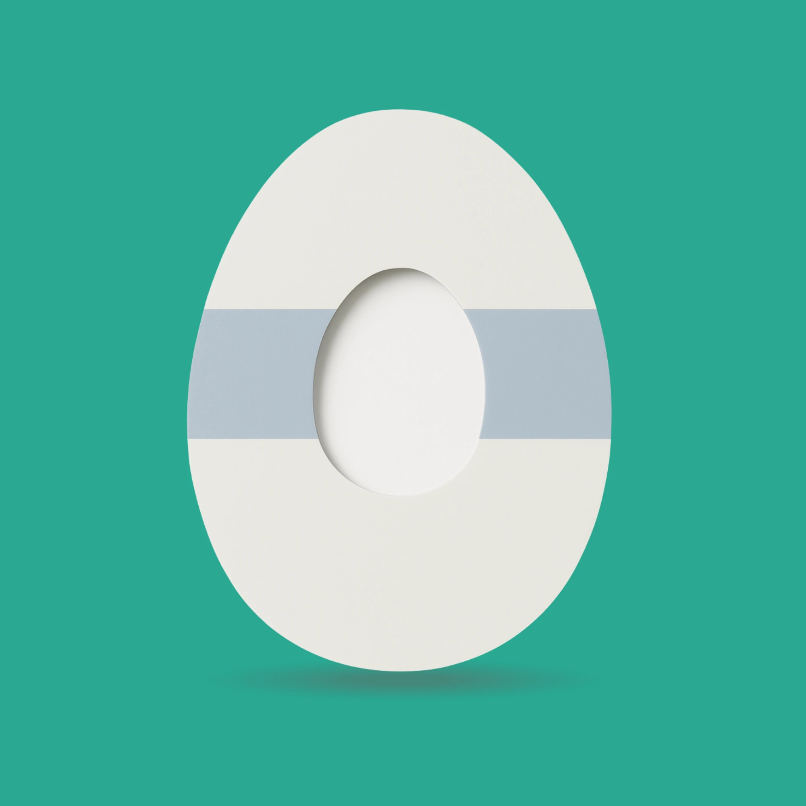

Sporten met diabetes, zonder gedoe.
Kleding met slimme zakken voor je insulinepomp, telefoon of glucosemeter, en overpatches die je sensor op z'n plek houden. Gemaakt om in te bewegen.
Gratis verzending
Vanaf € 50, binnen NL & BE
Discreet verpakt
Neutrale verzenddoos
30 dagen retour
Niet goed? Geld terug
Door de community
Getest door sporters met T1 & T2
Vind wat bij jou past
Van sportkleding met pompzakken tot overpatches in elke vorm.
De diabetes 2-pocket sportlegging
Twee stevige zijzakken op dijhoogte, precies groot genoeg voor een insulinepomp, telefoon of glucosemeter. Met een slangdoorvoer aan de binnenkant, zodat je slangetje niet in de weg zit.
- 2 diepe zijzakken met elastische rand: niets stuitert eruit
- Binnenopening voor de pompslang
- Hoge, brede tailleband die niet afzakt
- Ademend, sneldrogend en niet doorschijnend
Houd je sensor op z'n plek
Ademende, waterbestendige overpatches met een uitsparing voor je sensor of pod. Per 10 stuks.
Overpatch rond
€ 12,95Overpatch pomp
€ 14,95Overpatch ovaal
€ 13,95
Overpatch ei-vorm
€ 13,95Gemaakt door mensen die het zelf kennen
Wie met diabetes sport, kent het: een pomp in je beha, een telefoon in je sok, een sensor die halverwege de training loslaat. DiabeticsWear maakt kleding en accessoires die daar wél rekening mee houden.
Elk product testen we samen met sporters uit de diabetescommunity, van hardlopers tot crossfitters.
★★★★★“Eindelijk een legging waar mijn pomp gewoon in blijft zitten tijdens het hardlopen.”
★★★★★“De ronde patches houden mijn sensor de hele 14 dagen vast, ook met zwemmen.”
Veelgestelde vragen
Past mijn insulinepomp in de zakken van de legging?
De zakken zijn ca. 11 × 17 cm, ruim genoeg voor de meeste insulinepompen, een smartphone tot 6,7" of een glucosemeter. Controleer de afmetingen van je eigen apparaat.
Hoe lang gaan de overpatches mee?
De draagduur verschilt per persoon, huidtype en activiteit. Gebruik een nieuwe patch bij elke sensor- of podwissel.
Hoe snel wordt mijn bestelling geleverd?
Op werkdagen voor 22:00 besteld, de volgende werkdag in huis (NL). België 1–2 werkdagen.
Kan ik ruilen of retourneren?
Ja, binnen 30 dagen na ontvangst. Ongedragen kleding en ongeopende verpakkingen patches.
Welke maat moet ik hebben?
Bekijk de maattabel op de productpagina. Twijfel je tussen twee maten? Kies de grotere voor meer comfort rond de zakken.